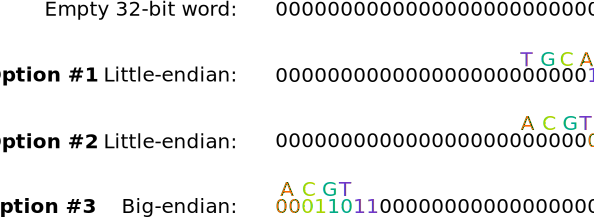
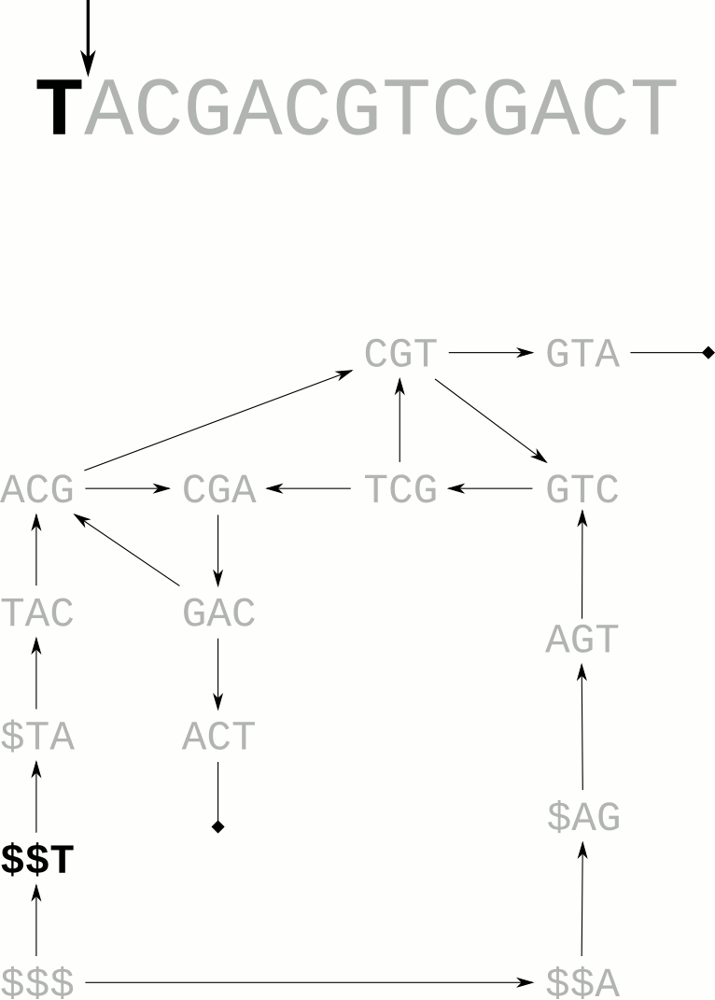

Gortex Design Sketchbook
Table of Contents
1 Gortex
This is an outline of my thinking when writing the gortex scripts. I know that I'll probably have to change the name at some point.
1.1 Storing Kmers Using big.Int
I want to be flexible in the size of kmers wer store to ensure we stay compatible with cortex-var (whose binary files we are reading).
Each kmer will be stored in a bitstring, allowing two bits per base. Two bits per base allows us to store A, G, T and C. Having the space to store only four possible nucleotides does mean that we'll probably have to throw out kmers that include Ns. I may relax the requirement in the future but it would mean that we have to allow 3 bits per base which might get expensive.
The Go standard library includes the package big.Int which is designed to store large multi-precision numbers. To store a large number, the package creates a slice of Words large enough to store the value. It includes many helpful funtions that operate across this slice of words, including bit-shifting operators Lsh (left shift) and Rsh (right shift).
To store our Kmers in these word slices, we encode each base in two bits like so:
We have two options for how we store the nucleotides. The examples here are using 32-bit words to that the figure is readable, but most systems will be using 64-bit words. Let's consider storing the 4-mer 'ACGT'.

The cortex-var program stores its kmer values as little-endian word slices in the style of option #2, so I think that it's best we follow suit. It also makes it easier to store small kmers as small values, which makes some debugging and development easier.
We're working with coloured graphs, so each kmer needs to store not only the nucleotides that it represents, but also how many times it was seen for each colour. Cortex-var also helpfully calculates the incoming and outgoing endges for each colour too, so we'll store that.
To store the coverage value, we're likely to need more than an 8-bit uint (max value 255), so we'll use a uint32 (maximum coverage value of 4,294,967,295 - plenty).
1.2 Strandedness
DNA strandedness presents a significant problem. Let's consider representing the sequence "TACGACGTCGACT", represented below with both strands.
Each kmer has up to two possible representations (the forward and reverse strand.
I think that we will have to store both strands in the one graph. This is a bit of a pain becaus it almost doubles the size of the graph instantly. Even with the doubling, the compression probably makes it worthwhile.
Let's say we have the graph from the sequence above. I've prepended the '$' symbol so that the whole sequence is represented in an edge. Note that only the last character in the edge is shown.
Let's not forget that this sequence also has a reverse-complement and we can construct a graph for this sequence also.
We can combine these to get the graph below. Note that I've removed the edge labels for clarity.

From here, we can construct the BWT-inspired compressed representation. For an introduction to this method, see Alex Bowe's excellent blog post on the subject.

